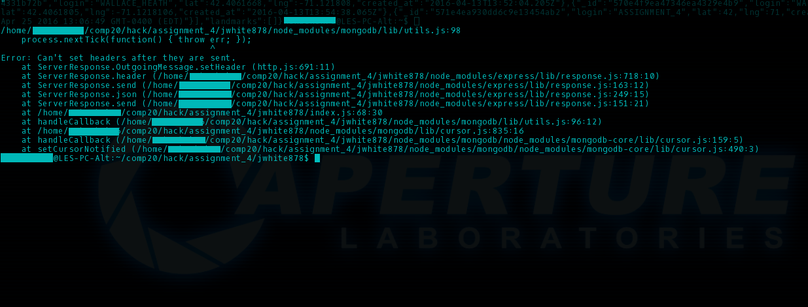
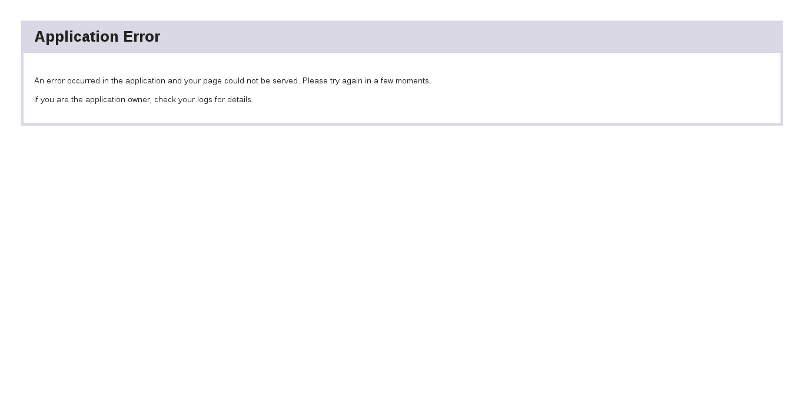

by Nikolas Shashok, 2016/4/25
This assessment tests the security of the Landmarks API application created by jwhite878 for Assignment 3 in Tufts Comp 20. The Landmarks API application is designed to provide a set of functions related to geolocation and local landmarks. It allows developers to retrieve information on local landmarks and other users near a user's location and monitor the locations a user has checked in from, and provides a visual interface to see all check-ins in chronological order. While this application is for the most part secure for everyday use, there are a number of vulnerabilities that can damage both the server and the client. This document identifies these vulnerabilities and suggests possible solutions. It does not address privacy vulnerabilities.
Analysis was first performed without knowledge of the source code, "black-box" style, on the Heroku-hosted API using the "curl" tool and a custom HTML document designed to provide invalid queries. The source code was then analyzed directly for further server-side vulnerabilities.
While this application is for the most part secure, the noted vulnerabilities are related directly to trusting user input. This is a common security issue, as it is much easier to write code for an expected set of inputs than it is to address all possible user inputs (benevolent or malevolent) at once. Most inputs in this application are correctly checked; however, there are some small areas where invalid user input can disrupt other users' experiences or crash the server.
Cross-Site Scripting (XSS)
Severity: Medium
While this vulnerability does not affect the server itself, it can damage clients trying to view check-ins or retrieve nearby user data.
When posting data to the API server, the "login" field is not sanitized. This allows for malicious users to post live Javascript and HTML to the server in the login field, which is then rendered on the main page and returned as part of other client calls to /sendLocation. If the client does not then sanitize the login field, this can cause malicious code to be run on user browsers and client-side applications. For example, running the command curl --data "login=<img src='https://upload.wikimedia.org/wikipedia/en/5/5f/Original_Doge_meme.jpg' /&rt;&lat=42&lng=71" http://[API-SOURCE]/sendLocation will render the following image of a Shiba Inu in any browser that displays user logins directly, including the API main site:
This vulnerability can be solved by sanitizing the login input and either removing or encoding all non-alphanumeric characters before storing it in the database.
Server Crash on Invalid JSON
Severity: Very High
This vulnerability will crash the server if exploited, and is very easy for clients to accidentally trigger.
When receiving a GET request from a client, the application checks whether the request header contains a 'login' field, and if none exists, responds with a blank array. However, due to a coding oversight if no login is provided the application will continue on, try to search the database with the blank login field, and when no match is found, responds with a 500: INTERNAL SERVER ERROR. It is a checked runtime error to respond twice to one request, and so the server crashes:
 This vulnerability can very easily be solved by wrapping the rest of the code after the login check in an else statement, and in general was taken care of very well throughout the rest of the application. However this type of issue is very common when dealing with asynchronous code and, if not understood correctly, can lead to a variety of other issues including incorrect processing of data and server errors due to functions being called out of order.
Other issues that were tested for, but not found, included remote querying of the MongoDB database with embedded queries in the login field (solved by searching the collection specifically for 'login' instead of querying the collection directly) and invalid latitude/longitude submission (solved with efficient error-checking when querying the database with a geolocation query).
While the Landmarks API is for the most part secure, the remaining issues render it unsuitable for a public release at present. However, the necessary repairs are simple, and following the recommendations provided above should be sufficient to fix the remaining issues. It is worth noting that there is a serious privacy concern in the API specifications itself, in that any user is able to access a list of all other users who have used this API, as well as their most recent locations. This concern could feasibly be addressed by restricting access to the main check-ins web interface and by providing false keys for all users on check-in.